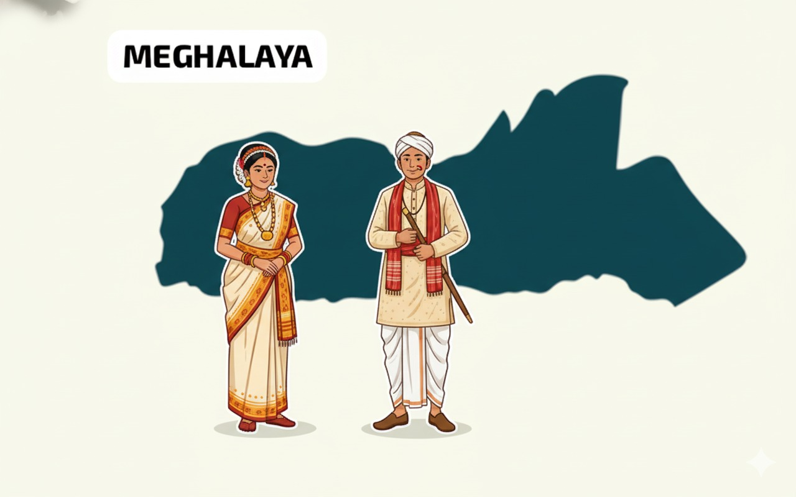

Quick history of Meghalaya
Meghalaya, meaning “abode of clouds,” it is home to the Khasi, Garo, and Jaintia tribes, known for their rich culture and matrilineal society.The state receives one of the world’s highest rainfalls, especially in Mawsynram and Cherrapunji.Frequent floods occur in the plains and low-lying areas like West Garo Hills.Landslides are common in hilly districts such as East Khasi Hills and Ri-Bhoi during monsoons.
Earthquakes occasionally strike due to Meghalaya’s location in Seismic Zone V.Deforestation and unplanned mining increase soil erosion and landslide risks.In 2024, heavy monsoon rains caused floods and road collapses in East Garo Hills and Shillong region.

Capital:Shillong
Statehood: 1972
Statehood: 1972
Detailed timeline & preparedness tips
- May-June 2025 monsoon crisis — intense rains triggered flash floods across many districts, with landslides reported in as Thoubal . Relief operations and air-drops were used to help cut-off villages.
- Common impacts — damaged roads, washed-away bridges, destroyed crops, temporary sheltering in relief camps, and travel disruption along NH routes (including sections of NH-13 / BCT highway).
- Preparedness tips — keep an emergency bag (food, water, torch, first-aid), register with local disaster authorities, avoid river banks during heavy rain, and follow official evacuation orders.
- How you can help — support verified local relief funds/NGOs, donate through government-endorsed channels, or volunteer through district disaster management teams.